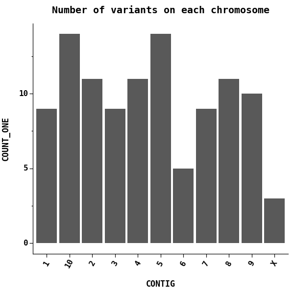
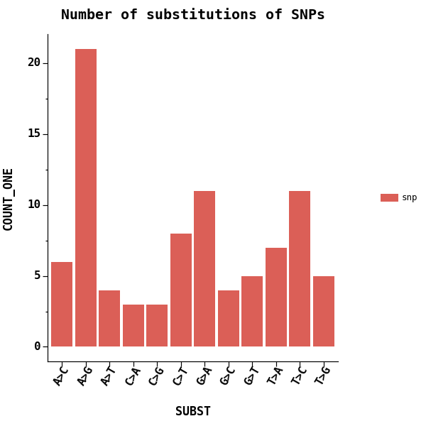
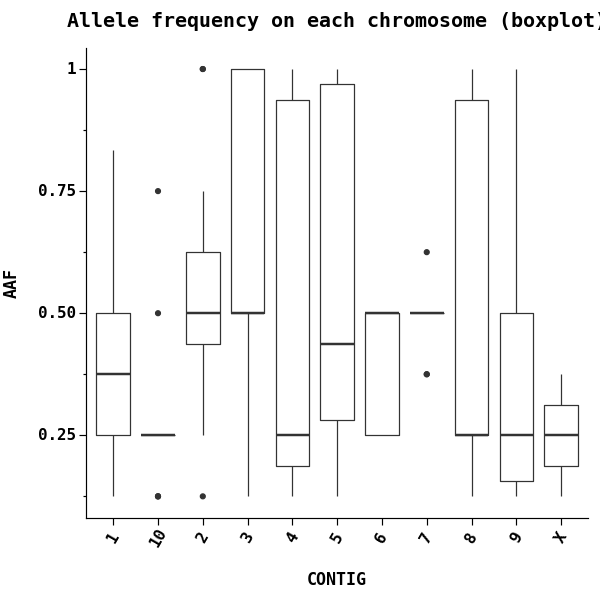
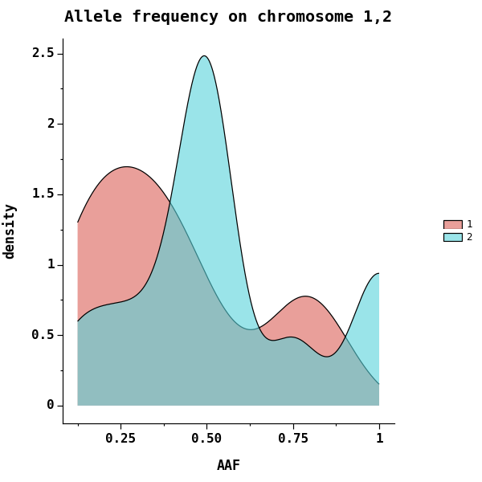
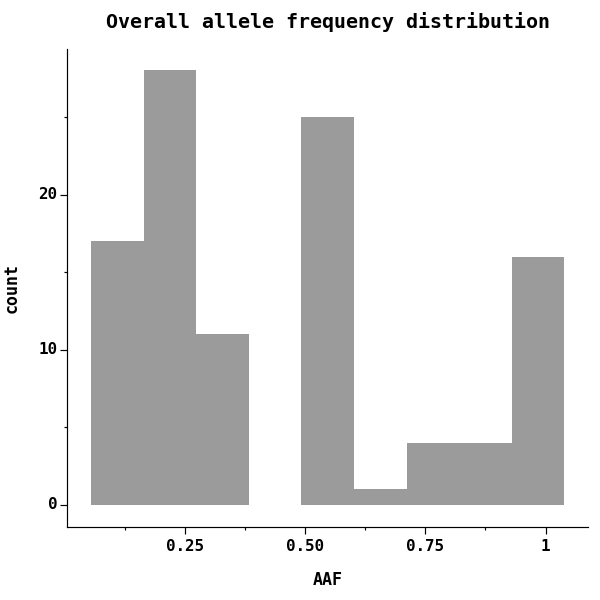
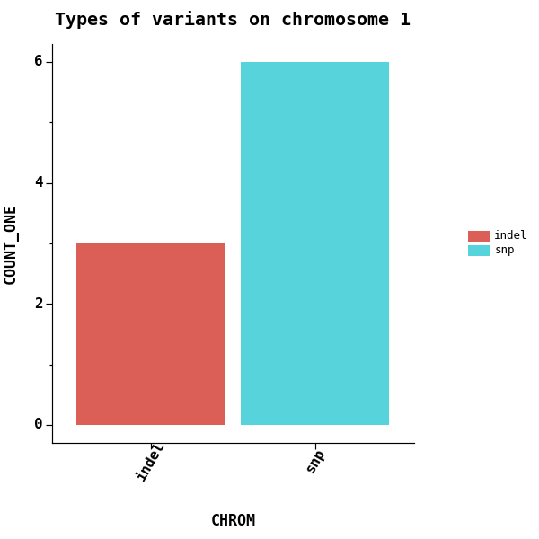
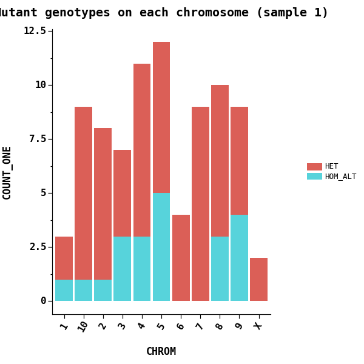
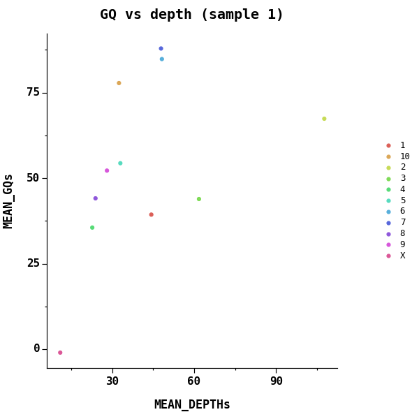

Introduction
vcfstats - powerful statistics for VCF files


 [
[ ]
] ]
]Motivation
There are a couple of tools that can plot some statistics of VCF files, including bcftools and jvarkit. However, none of them could:
- plot specific metrics
- customize the plots
- focus on variants with certain filters
R package vcfR can do some of the above. However, it has to load entire VCF into memory, which is not friendly to large VCF files.
Installation
pip install -U vcfstats
Or run with docker:
docker run \
-w /vcfstats/workdir \
-v $(pwd):/vcfstats/workdir \
--rm justold/vcfstats:latest \
vcfstats \
--vcf myfile.vcf \
-o outputs \
--formula 'COUNT(1) ~ CONTIG' \
--title 'Number of variants on each chromosome'
Gallery
Number of variants on each chromosome
vcfstats --vcf examples/sample.vcf \
--outdir examples/ \
--formula 'COUNT(1) ~ CONTIG' \
--title 'Number of variants on each chromosome' \
--config examples/config.toml

Changing labels and ticks
vcfstats uses plotnine for plotting, read more about it on how to specify --ggs to modify the plots.
vcfstats --vcf examples/sample.vcf \
--outdir examples/ \
--formula 'COUNT(1) ~ CONTIG' \
--title 'Number of variants on each chromosome (modified)' \
--config examples/config.toml \
--ggs 'scale_x_discrete(name ="Chromosome", \
limits=["1","2","3","4","5","6","7","8","9","10","X"]); \
ylab("# Variants")'

Number of variants on first 5 chromosome
vcfstats --vcf examples/sample.vcf \
--outdir examples/ \
--formula 'COUNT(1) ~ CONTIG[1,2,3,4,5]' \
--title 'Number of variants on each chromosome (first 5)' \
--config examples/config.toml
# or
vcfstats --vcf examples/sample.vcf \
--outdir examples/ \
--formula 'COUNT(1) ~ CONTIG[1-5]' \
--title 'Number of variants on each chromosome (first 5)' \
--config examples/config.toml
# or
# require vcf file to be tabix-indexed.
vcfstats --vcf examples/sample.vcf \
--outdir examples/ \
--formula 'COUNT(1) ~ CONTIG' \
--title 'Number of variants on each chromosome (first 5)' \
--config examples/config.toml -r 1 2 3 4 5

Number of substitutions of SNPs
vcfstats --vcf examples/sample.vcf \
--outdir examples/ \
--formula 'COUNT(1, VARTYPE[snp]) ~ SUBST[A>T,A>G,A>C,T>A,T>G,T>C,G>A,G>T,G>C,C>A,C>T,C>G]' \
--title 'Number of substitutions of SNPs' \
--config examples/config.toml

Only with SNPs PASS all filters
vcfstats --vcf examples/sample.vcf \
--outdir examples/ \
--formula 'COUNT(1, VARTYPE[snp]) ~ SUBST[A>T,A>G,A>C,T>A,T>G,T>C,G>A,G>T,G>C,C>A,C>T,C>G]' \
--title 'Number of substitutions of SNPs (passed)' \
--config examples/config.toml \
--passed

Alternative allele frequency on each chromosome
# using a dark theme
vcfstats --vcf examples/sample.vcf \
--outdir examples/ \
--formula 'AAF ~ CONTIG' \
--title 'Allele frequency on each chromosome' \
--config examples/config.toml --ggs 'theme_dark()'

Using boxplot
vcfstats --vcf examples/sample.vcf \
--outdir examples/ \
--formula 'AAF ~ CONTIG' \
--title 'Allele frequency on each chromosome (boxplot)' \
--config examples/config.toml \
--figtype boxplot

Using density plot/histogram to investigate the distribution:
You can plot the distribution, using density plot or histogram
vcfstats --vcf examples/sample.vcf \
--outdir examples/ \
--formula 'AAF ~ CONTIG[1,2]' \
--title 'Allele frequency on chromosome 1,2' \
--config examples/config.toml \
--figtype density

Overall distribution of allele frequency
vcfstats --vcf examples/sample.vcf \
--outdir examples/ \
--formula 'AAF ~ 1' \
--title 'Overall allele frequency distribution' \
--config examples/config.toml

Excluding some low/high frequency variants
vcfstats --vcf examples/sample.vcf \
--outdir examples/ \
--formula 'AAF[0.05, 0.95] ~ 1' \
--title 'Overall allele frequency distribution (0.05-0.95)' \
--config examples/config.toml

Counting types of variants on each chromosome
vcfstats --vcf examples/sample.vcf \
--outdir examples/ \
--formula 'COUNT(1, group=VARTYPE) ~ CHROM' \
# or simply
# --formula 'VARTYPE ~ CHROM' \
--title 'Types of variants on each chromosome' \
--config examples/config.toml

Using bar chart if there is only one chromosome
vcfstats --vcf examples/sample.vcf \
--outdir examples/ \
--formula 'COUNT(1, group=VARTYPE) ~ CHROM[1]' \
# or simply
# --formula 'VARTYPE ~ CHROM[1]' \
--title 'Types of variants on chromosome 1' \
--config examples/config.toml \
--figtype pie

Counting variant types on whole genome
vcfstats --vcf examples/sample.vcf \
--outdir examples/ \
# or simply
# --formula 'VARTYPE ~ 1' \
--formula 'COUNT(1, group=VARTYPE) ~ 1' \
--title 'Types of variants on whole genome' \
--config examples/config.toml

Counting type of mutant genotypes (HET, HOM_ALT) for sample 1 on each chromosome
vcfstats --vcf examples/sample.vcf \
--outdir examples/ \
# or simply
# --formula 'GTTYPEs[HET,HOM_ALT]{0} ~ CHROM' \
--formula 'COUNT(1, group=GTTYPEs[HET,HOM_ALT]{0}) ~ CHROM' \
--title 'Mutant genotypes on each chromosome (sample 1)' \
--config examples/config.toml

Exploration of mean(genotype quality) and mean(depth) on each chromosome for sample 1
vcfstats --vcf examples/sample.vcf \
--outdir examples/ \
--formula 'MEAN(GQs{0}) ~ MEAN(DEPTHs{0}, group=CHROM)' \
--title 'GQ vs depth (sample 1)' \
--config examples/config.toml

Exploration of depths for sample 1,2
vcfstats --vcf examples/sample.vcf \
--outdir examples/ \
--formula 'DEPTHs{0} ~ DEPTHs{1}' \
--title 'Depths between sample 1 and 2' \
--config examples/config.toml

See more examples:
https://github.com/pwwang/vcfstats/issues/15#issuecomment-1029367903